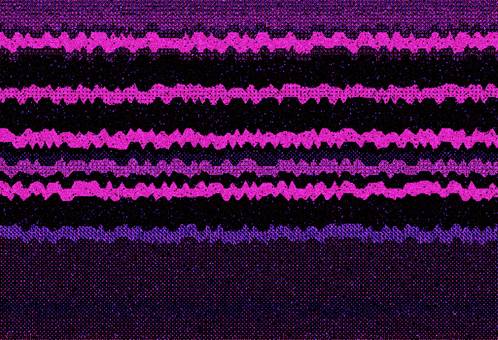

La luz en los ojos
los ojos brillantes
se cristalizan, se mojan
yo me mojo cuando me chupas la oreja
mientras tanto pico teclas como loco
buscando el año primero de la internacional situacionista
luego me olvido y escribo un poema pensando en baskara
se rompen las puertas del alma
cuando me elevo pierdo los significados
y ya no recuerdo las palabras de kropotkin
por qué soy a toda velocidad
Produciendo, productando, procreando
Futuros distópicos amigables
Va rápido la neurona
tan rápido que olvida una idea tras otra
como si fuera una trampa para convertirme
en idiota
- La luna brilla con intensidad
- Las estrellas cuentan historias
- El silencio envuelve el entorno
- La belleza de la noche es única